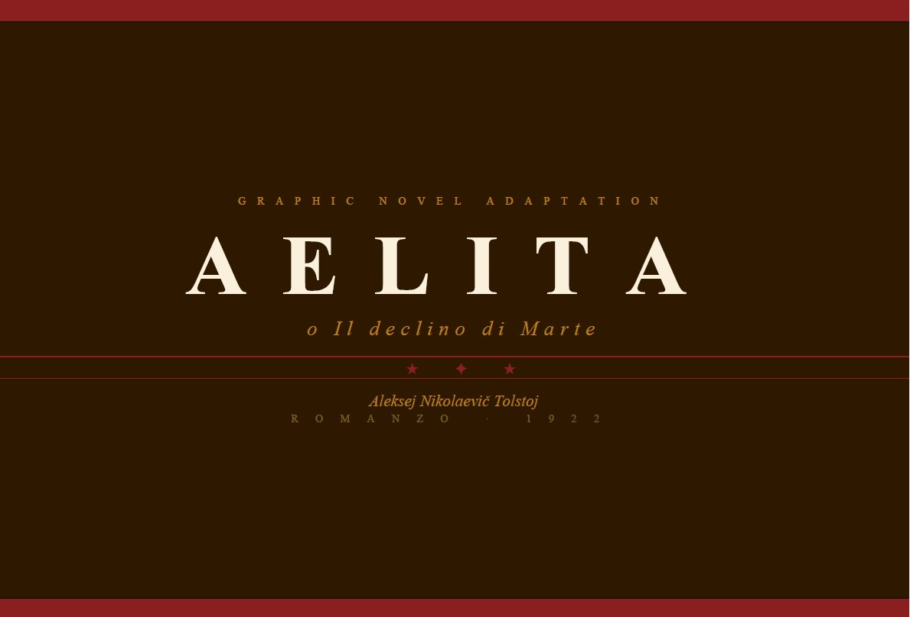
Adattamento Graphic Novel dal romanzo di Aleksej Nikolaevič Tolstoj (1922).
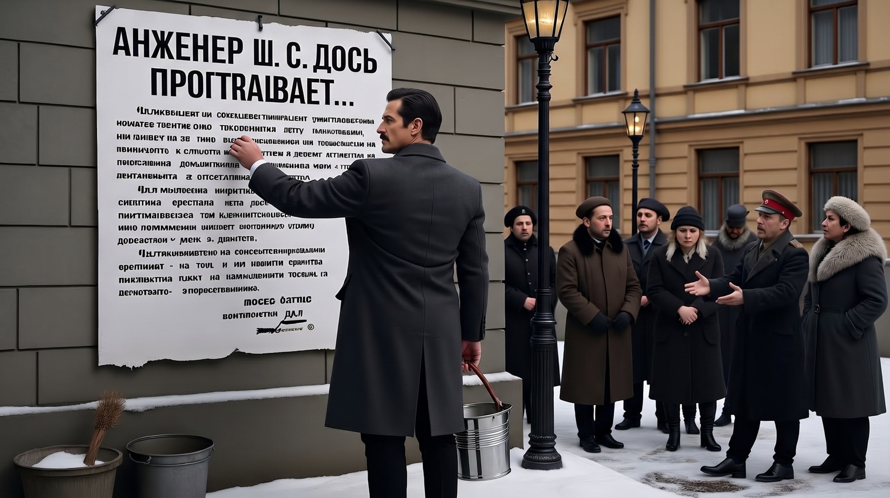
L'ingegnere Mstislav Los' attacca l'annuncio di reclutamento per un viaggio su Marte tra le strade spoglie di Pietrogrado dopo la rivoluzione di Ottobre.
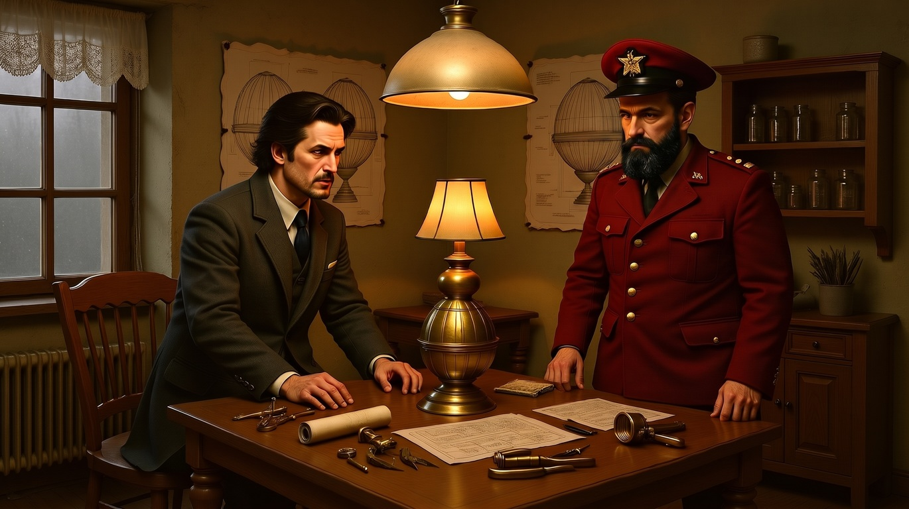
Al progetto aderisce Aleksej Gusev, un soldato dell'Armata Rossa, bolscevico dinamico e pragmatico. Il primo incontro avviene nel laboratorio di Los'.
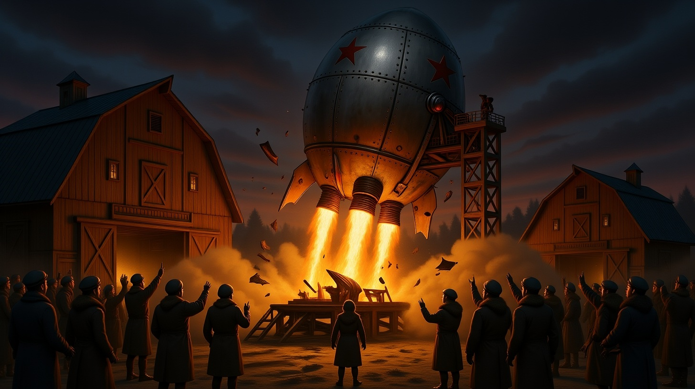
Partenza del razzo metallico tra fumo ed esplosioni atomiche di fronte alla folla incuriosita e speranzosa di diffondere nello spazio il pensiero rivoluzionario.
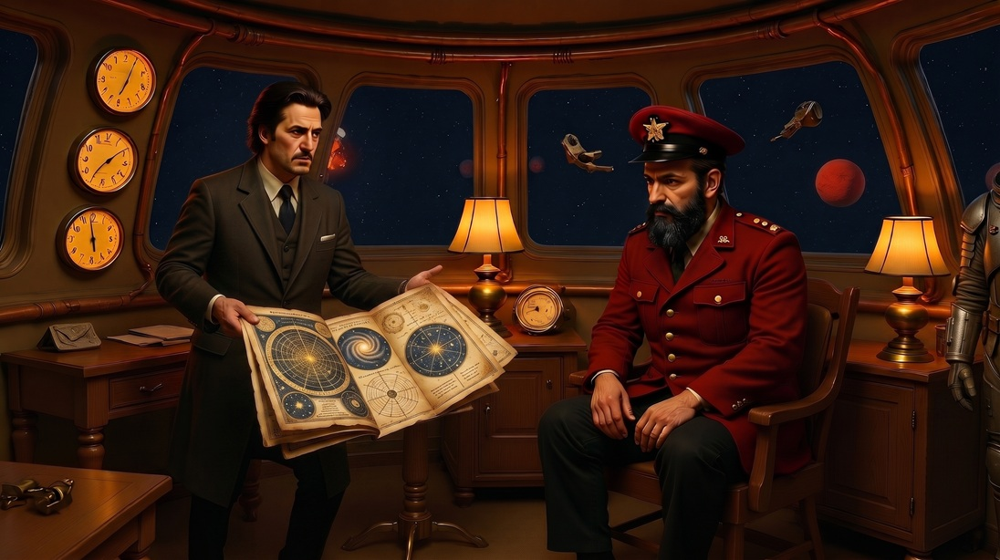
La quotidianità all'interno dell'abitacolo sferico durante la navigazione nello spazio profondo. Los mostra carte cosmiche al compagno di viaggio.
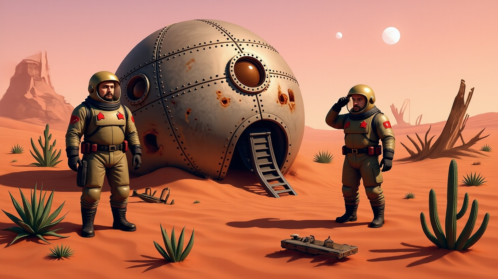
I due terrestri muovono i primi passi sul suolo marziano tra rocce rosse, cactus e piante aliene. Nessuna traccia di vita, tantomeno di civiltà.
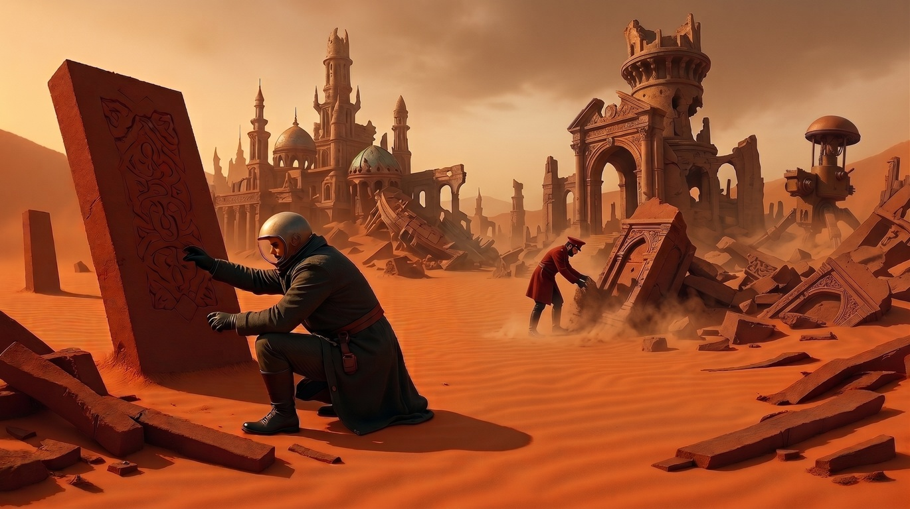
I due non demordono, spinti dal loro credo. Dopo qualche km si imbattono nei resti di quella che sembra una città marziana abbandonata.
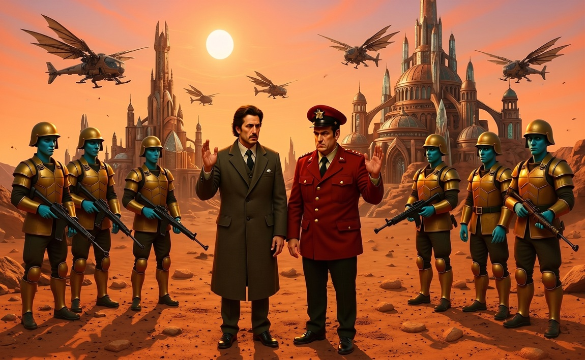
Continuando il cammino, i due si accorgono che la civiltà è ancora integra. I terrestri mostrano un messaggio di pace, ma vengono accerchiati da soldati di carnagione blu-verde.
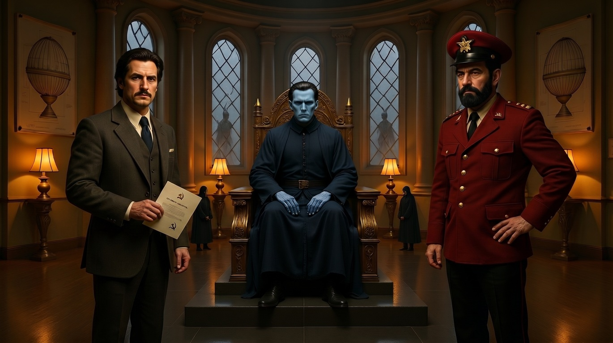
Condotti nella capitale, incontrano Tuskub, il signore di Marte, che vuole conoscerli. Ma non c'è dialogo tra i terrestri e il dittatore imperscrutabile.
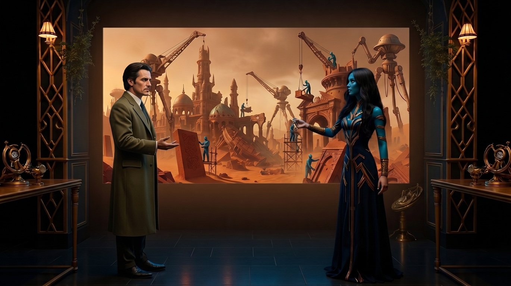
L'incontro riservato nella dimora principesca di Aelita, figlia di Tuskub. La giovane mostra all'ingegnere terrestre i tentativi di ricostruzione della civiltà marziana.
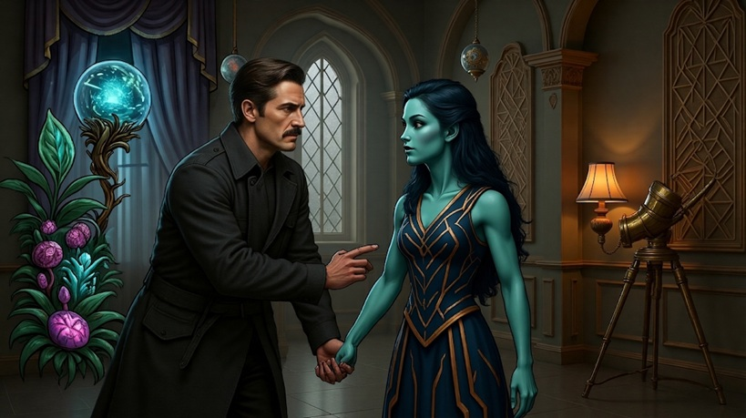
La principessa confida a Los il desiderio di fuggire da una società antiquata e maschilista. Los la convince ad andare con lui nella rinnovata Russia.
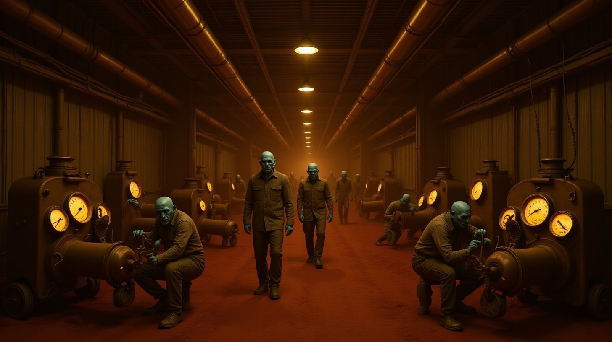
Nel frattempo, Gusev visita i bassifondi industriali marziani toccando con mano lo sfruttamento del proletariato alieno.
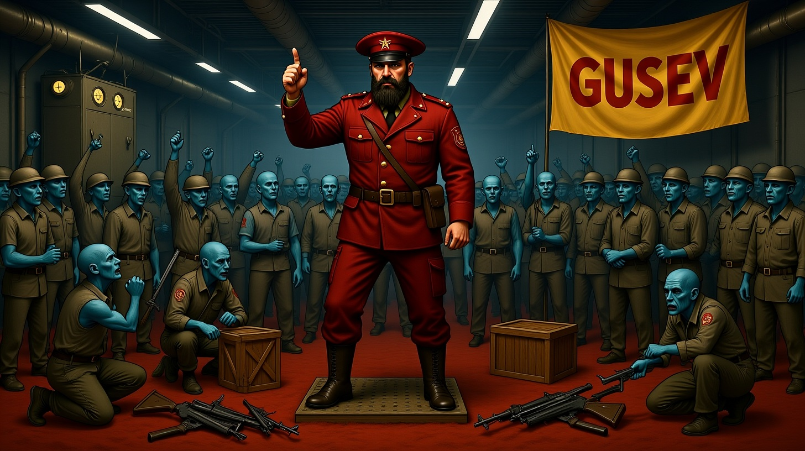
Gusev parla alla folla di lavoratori marziani incitandoli a una rivolta. Qualcuno aderisce, ma altri temono i soldati di Tuskub.
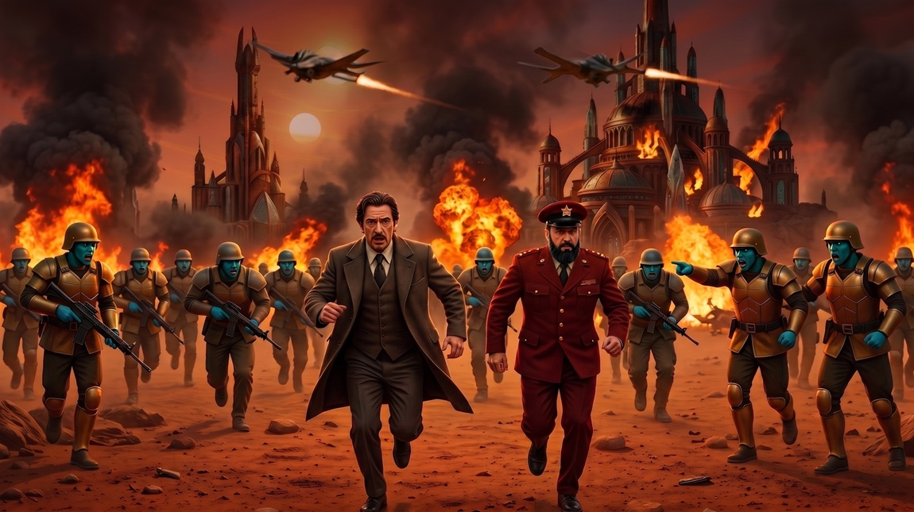
Il dittatore viene informato della missione dei terrestri, che vengono rincorsi dall'esercito. Nel frattempo alcuni marziani hanno aderito al pensiero bolscevico e scoppia una guerra civile.
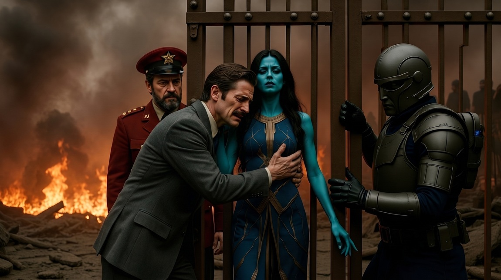
Los' viene allontanato da Aelita durante il crollo del movimento insurrezionale. I due amanti si abbracciano per l'ultima volta. Le guardie Tuskub sorvegliano la principessa.
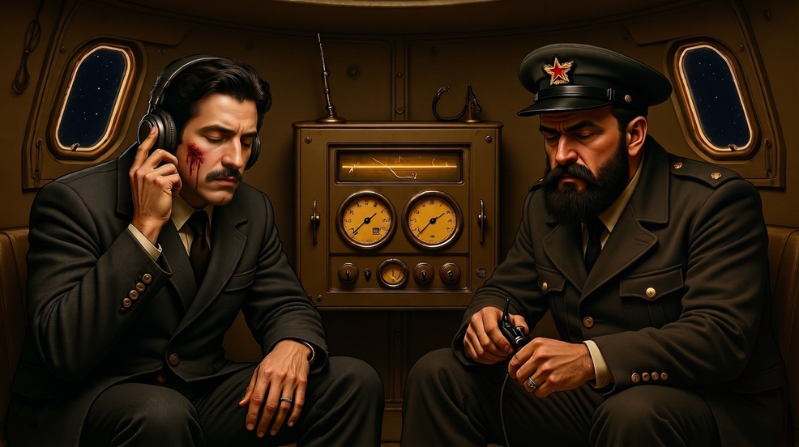
I terrestri raggiungono la navicella, dalla quale cercano di sintonizzarsi al radio-trasmettitore del palazzo reale, dove Aelita disperata lancia messaggi nel cosmo.
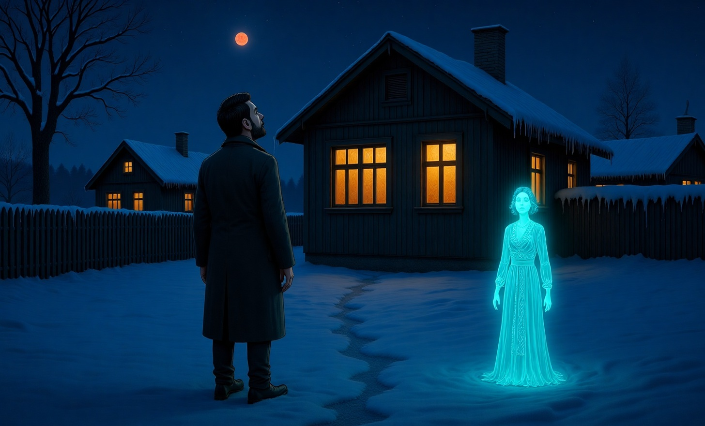
Los, nelle fredde notti dell'inverno russo, guarda il cielo cosmico, sognando il fantasma della bella principessa aliena. Forse progetterà una nuova missione.